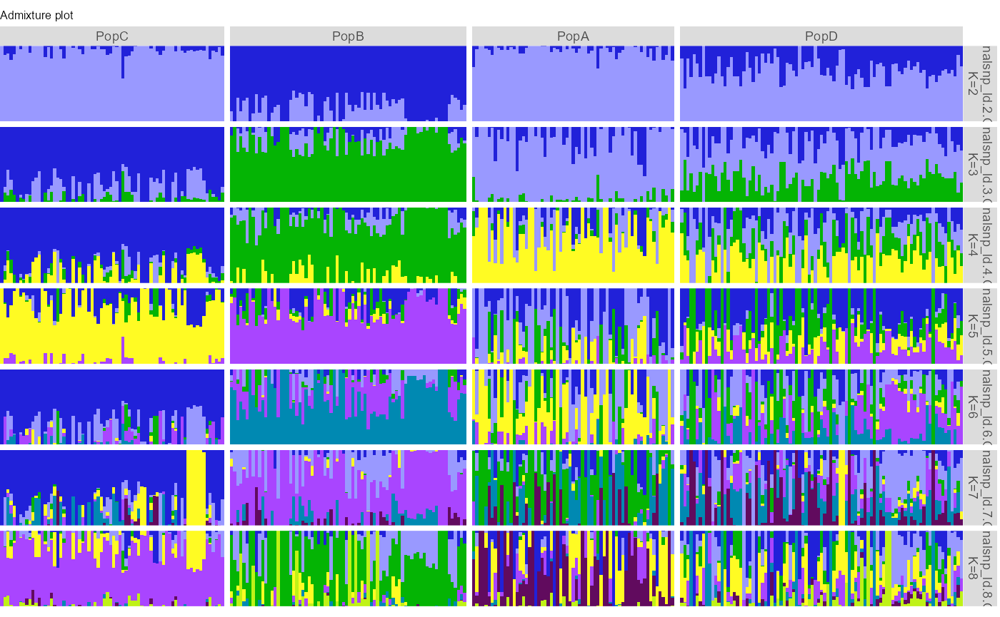
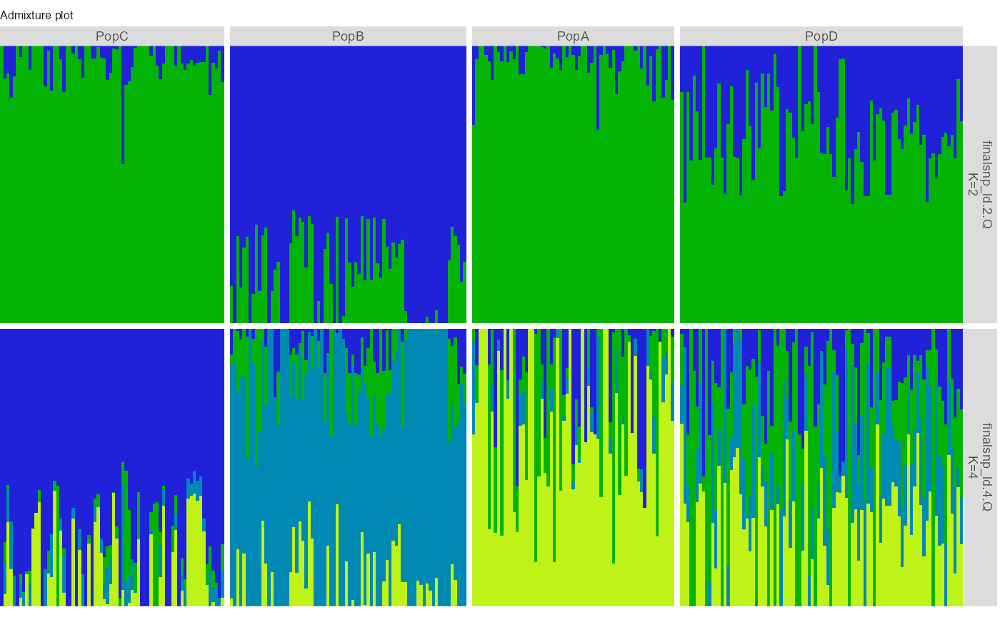
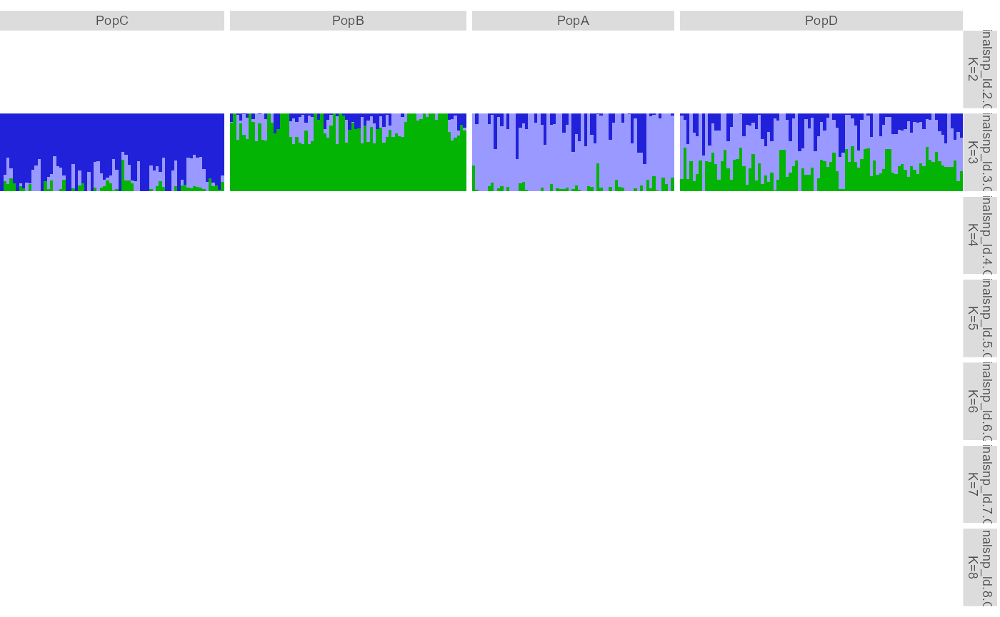
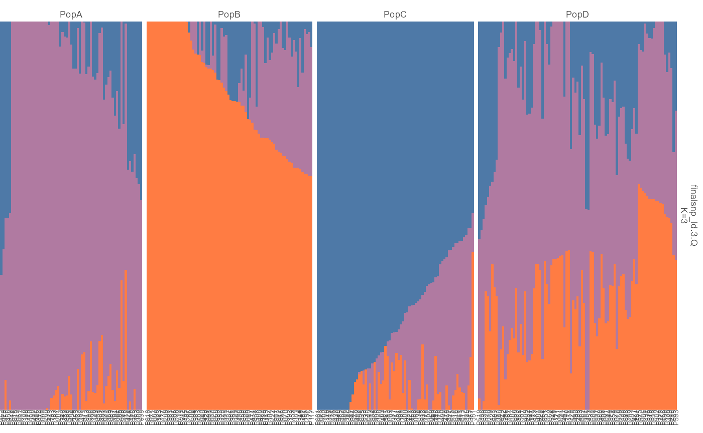
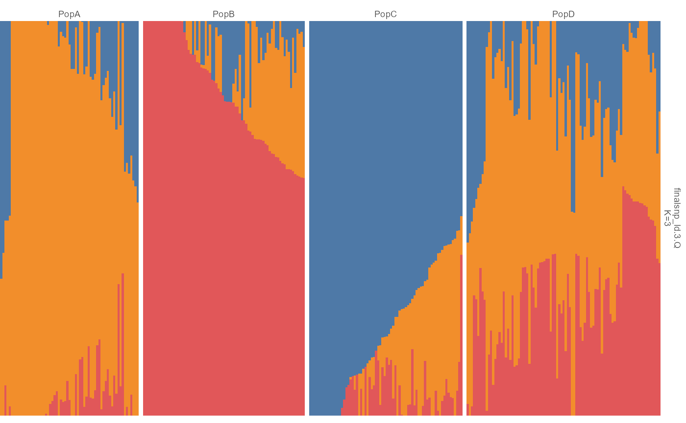
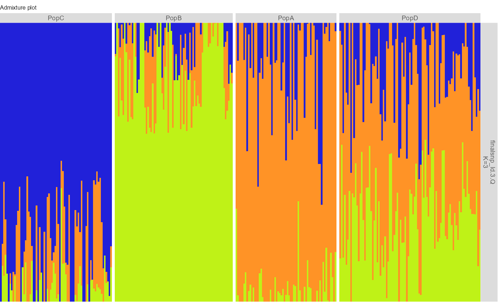

ggpop keeps the user-facing admixture API narrow:
-
import_admix()creates typedggpop_admixobjects; -
plot_admix()returns aggplotobject; -
ggpop() + geom_admix()gives the extension-style layered workflow.
API summary
| Task | API | Notes |
|---|---|---|
Import ADMIXTURE directory or .Q files |
import_admix(file, type = "admixture", pop_group = NULL) |
Reads full K result sets |
| Import STRUCTURE-style numeric Q matrix | import_admix(file, type = "structure") |
Limited numeric Q support |
| Direct plot | plot_admix(data, k = ...) |
k = "all", one K, or a vector |
| Layered plot | ggpop(data) + geom_admix(k = ...) |
Main ggplot extension path |
| Original pophelper behavior | plot_pophelper_q() |
Advanced compatibility layer |
Full K results
admix <- import_admix(
ggpop_extdata("admixture"),
type = "admixture",
ind = ggpop_extdata("snp", "finalsnp_ld.fam"),
pop_group = ggpop_extdata("pop_group.txt")
)
plot_admix(admix, k = "all")
plot_admix(admix, k = c(2, 4))
ggpop(admix) + geom_admix(k = 3)
Population group labels and sorting
pop_group.txt uses two columns, sample and
pop. It is joined during import:
head(import_pop_group(ggpop_extdata("pop_group.txt")))
#> sample_id pop
#> 1 P001 PopC
#> 2 P004 PopB
#> 3 P006 PopC
#> 4 P009 PopA
#> 5 P010 PopB
#> 6 P012 PopBThe native ggplot implementation mirrors the supported pophelper
plotQ() behavior for:
- individual labels with
show_sample_labels = TRUE; - sorting individuals with
sort = "all",sort = "label", or a cluster name such asK1; - group labels with
show_group_labels = TRUE; - sorting with group labels using
order_group = TRUE.
plot_admix(
admix,
k = 3,
sort = "all",
order_group = TRUE,
show_group_labels = TRUE,
show_sample_labels = TRUE
)
The layered ggplot path returns the same kind of ggplot object:
ggpop(admix) +
geom_admix(k = 3, sort = "all", order_group = TRUE)
Direct vs layered use
plot_admix() is the direct plot wrapper.
geom_admix() is the layered interface when you want to
build a larger ggplot object yourself. Both routes use the
same visual defaults; plot_admix() is the reference style,
and ggpop(admix) + geom_admix() reproduces that
publication-level look inside a ggplot composition.
plot_admix(admix, k = 3)
ggpop(admix) + geom_admix(k = 3)
STRUCTURE-style input
import_admix() also accepts limited STRUCTURE-style
inputs. The importer always returns the same typed long-format
object.
structure <- import_admix("structure_results.out", type = "structure")
plot_admix(structure, k = "all")